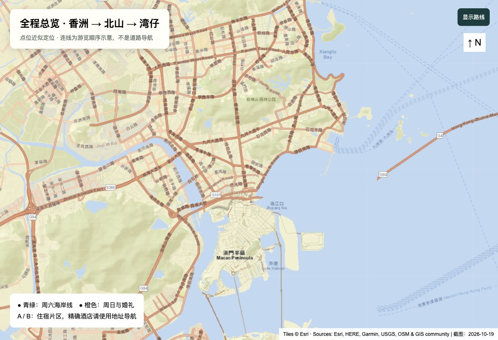
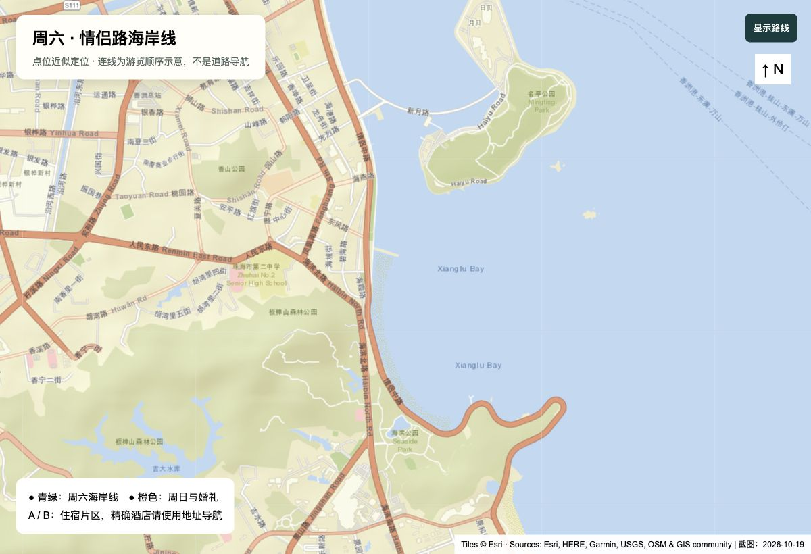

地图来源：Tiles © Esri · Sources: Esri, HERE, Garmin, USGS, Intermap, INCREMENT P, NRCan, Esri Japan, METI, Esri China (Hong Kong), Esri Korea, Esri (Thailand), NGCC, (c) OpenStreetMap contributors, and the GIS User Community。与方案路线图使用相同底图，便于核对地理位置；游览编号和路线标记在主页面展示。

